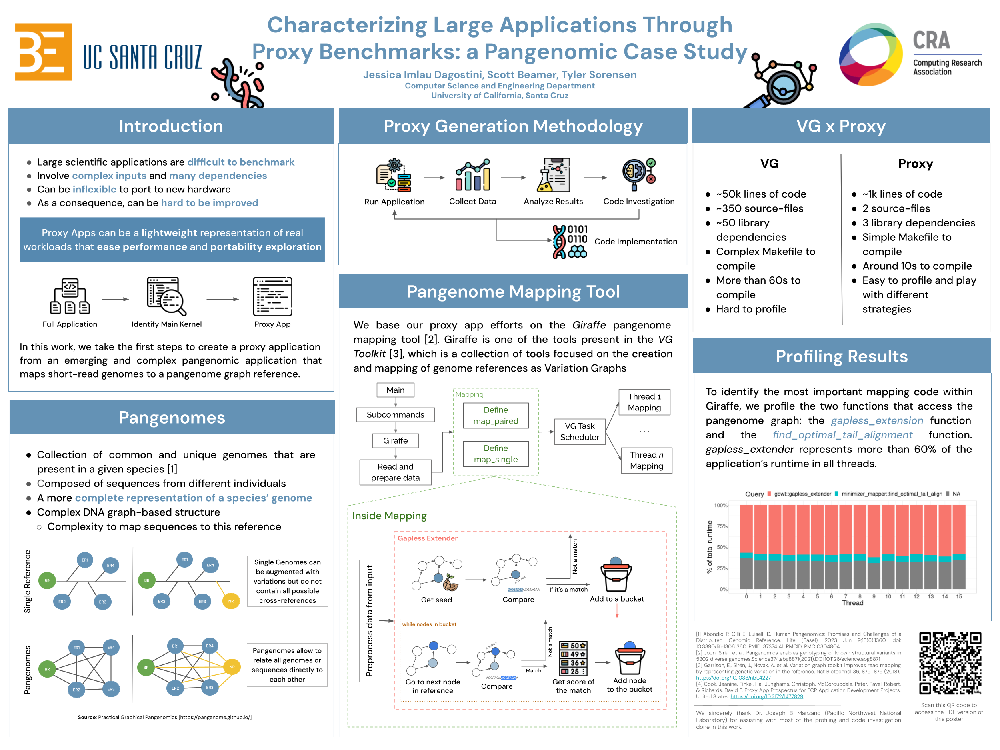

Menu
Home
About
Resume
Projects
News
Publications
Characterizing Large Applications Through Proxy Benchmarks:
a Pangenomic Case Study
Jessica Imlau Dagostini, Scott Beamer, Tyler Sorensen
Download PDF
